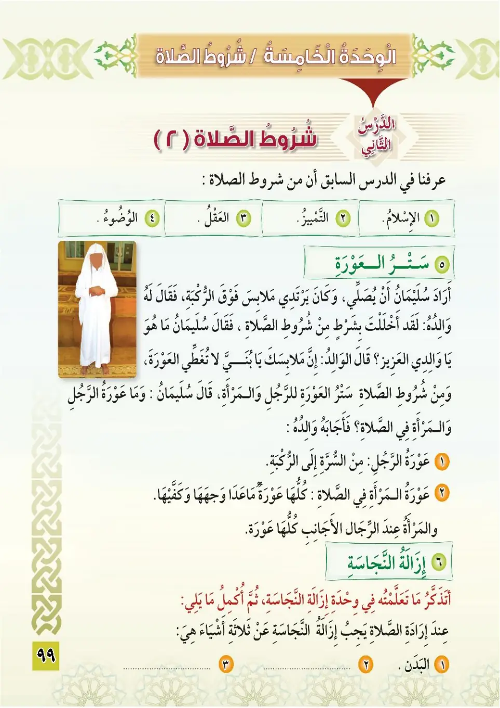
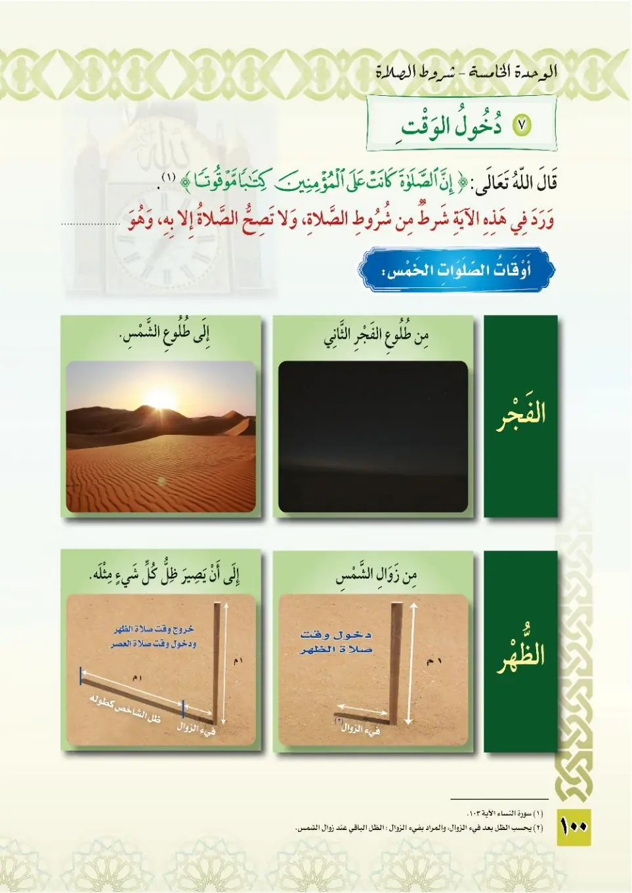
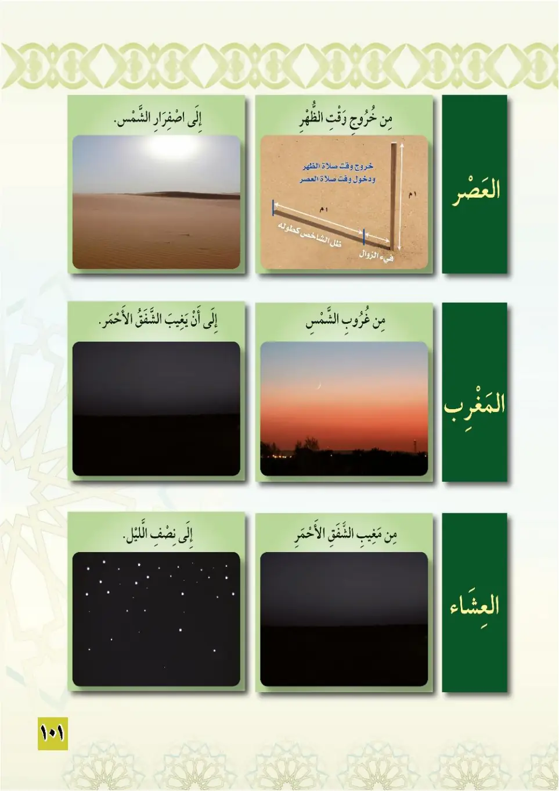
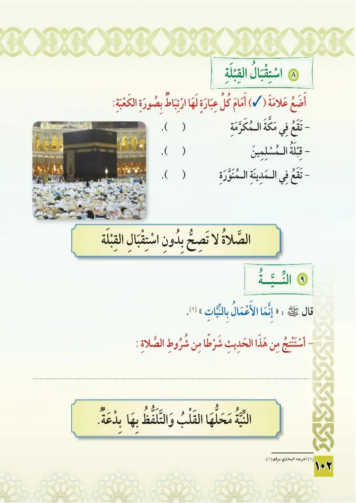
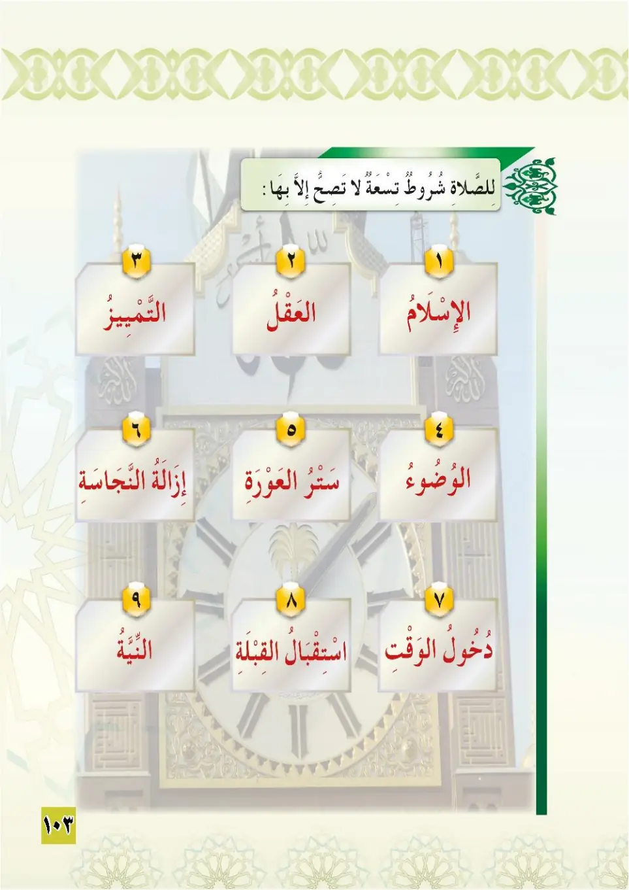
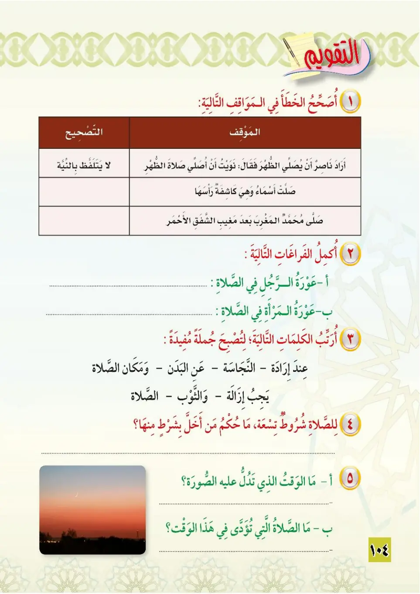

Stage 3·المرحلة الثالثة💧 Unit 5
شُرُوطُ الصَّلَاةِ (٢) Conditions of Prayer (2)
From the Textbookpp. 100–105






من شروط الصلاة: ستر العورة. عورة الرجل من السرة إلى الركبة. عورة المرأة في الصلاة كلها ما عدا وجهها وكفيها. عورة المرأة عند الأجانب الرجال: كلها.
Min shuruti as-salah: satru al-'awrah. 'Awratu ar-rajuli min as-surrati ila ar-rukbah. 'Awratu al-mar'ati fis-salahi kulluha ma 'ada wajhaha wa kaffayha.
Among the conditions of prayer: covering the awrah.<br>The awrah of a man is from the navel to the knee.<br>The awrah of a woman in prayer is her whole body except her face and hands.<br>The awrah of a woman before unrelated men is her entire body.
நிபந்தனைகளில்: அவ்ரத்தை மறைத்தல்.<br>ஆணின் அவ்ரா: தொப்புளிலிருந்து முழங்கால் வரை.<br>தொழுகையில் பெண்ணின் அவ்ரா: முகம், கை பகுதிகள் தவிர முழு உடல்.<br>மெஹ்ரம் அல்லாத ஆண்கள் முன்னிலையில் பெண்ணின் முழு உடலும் அவ்ரா.
من شروط الصلاة: إزالة النجاسة. يجب عند إرادة الصلاة إزالة النجاسة عن ثلاثة أشياء: ١- البدن. ٢- الثياب. ٣- مكان الصلاة.
Min shuruti as-salah: izalatu an-najasah. Yajibu 'inda iradati as-salah izalatu an-najasah 'an thalathat ashyal: al-badan, ath-thiyab, makan as-salah.
Among the conditions of prayer: removing impurity.<br>When intending to pray, one must remove impurity from three things:<br>1. The body.<br>2. The clothes.<br>3. The place of prayer.
நிபந்தனைகளில்: நாஜஸை நீக்குதல்.<br>தொழ விரும்பும்போது மூன்றிலிருந்து நாஜஸ் நீக்குதல் கடமை:<br>1. உடல்.<br>2. ஆடைகள்.<br>3. தொழுமிடம்.
من شروط الصلاة: دخول الوقت. لا تصح الصلاة إلا بمعرفة دخول وقتها. أوقات الصلوات الخمس: ١- الفجر: من طلوع الفجر الثاني إلى طلوع الشمس. ٢- الظهر: من زوال الشمس إلى أن يصير ظل كل شيء مثله. ٣- العصر: من خروج وقت الظهر إلى اصفرار الشمس. ٤- المغرب: من غروب الشمس إلى مغيب الشفق الأحمر. ٥- العشاء: من مغيب الشفق الأحمر إلى نصف الليل.
Min shuruti as-salah: dukhulu al-waqt. Awqatu as-salawati al-khams: al-fajr min tulu'i al-fajri ath-thani ila tulu'i ash-shams; adh-dhuhur min zawali ash-shams ila an yasira dhil-lu kulli shay'in mithlah; al-asr min khuruji waqti adh-dhuhur ila isfirari ash-shams; al-maghrib min ghurubi ash-shams ila mughibi ash-shafaqi al-ahmar; al-'isha min mughibi ash-shafaqi al-ahmar ila nisfi al-layl.
Among the conditions of prayer: the entry of the time.<br>Prayer is not valid except knowing that its time has begun.<br>The times of the five prayers:<br>1. Fajr: from dawn to sunrise.<br>2. Dhuhr: from the sun's decline from its zenith until an object's shadow equals its length.<br>3. Asr: from the end of Dhuhr time until the sun turns yellow.<br>4. Maghrib: from sunset until the red twilight fades.<br>5. Isha: from the fading of the red twilight until midnight.
நிபந்தனைகளில்: நேரம் உள்ளேறுதல்.<br>தொழுகை சரியான நேரத்தில் மட்டுமே செல்லும்.<br>ஐந்து தொழுகை நேரங்கள்:<br>1. ஃபஜ்ர்: விடியல் முதல் சூரிய உதயம் வரை.<br>2. துஹ்ர்: நண்பகல் சாய்வு முதல் நிழல் சமமாகும் வரை.<br>3. அஸ்ர்: துஹ்ர் முடிந்ததும் முதல் சூரியன் மஞ்சளாவது வரை.<br>4. மஃரிப்: சூரிய அஸ்தமனம் முதல் சிவப்பு அந்தி மறையும் வரை.<br>5. இஷா: சிவப்பு அந்தி மறைந்ததும் முதல் நள்ளிரவு வரை.
﴿إِنَّ الصَّلَاةَ كَانَتْ عَلَى الْمُؤْمِنِينَ كِتَابًا مَّوْقُوتًا﴾
Inna as-salaha kanat 'ala al-mu'minina kitaban mawquta.
Prayer is obligatory for the believers at prescribed times.
நம்பிக்கையாளர்களுக்கு தொழுகை குறித்த நேரங்களில் கடமையாக்கப்பட்டுள்ளது.
من شروط الصلاة: استقبال القبلة. لا تصح الصلاة بدون استقبال القبلة؛ فهي شرط من شروطها. الكعبة في مكة المكرمة، وهي قبلة المسلمين جميعًا. من شروط الصلاة: النية. محل النية القلب ولا يتلفظ بها، فهي شرط من شروط الصلاة.
Min shuruti as-salah: istiqbalu al-qiblah. La tasihhu as-salah biduni istiqbali al-qiblah. Al-ka'batu fi Makkata al-mukarramah wa hiya qiblatu al-muslimin jami'an. Min shuruti as-salah: an-niyyah. Mahallu an-niyyah al-qalb wa la yutalaf-fazu biha.
Among the conditions of prayer: facing the Qiblah.<br>Prayer is not valid without facing the Qiblah; it is a condition of it.<br>The Kaaba is in Makkah and it is the Qiblah of all Muslims.<br>Among the conditions of prayer: the intention (niyyah).<br>The place of intention is the heart, and it is not pronounced aloud; it is a condition of prayer.
நிபந்தனைகளில்: கிப்லாவை முன்னோக்குதல்.<br>கிப்லா இல்லாமல் தொழுகை செல்லாது; அது நிபந்தனை.<br>கஃபா மக்காவில் உள்ளது; அதுவே அனைத்து முஸ்லிம்களின் கிப்லா.<br>நிபந்தனைகளில்: நிய்யத்.<br>நிய்யத்தின் இடம் நெஞ்சம்; வாயால் சொல்லப்படுவதில்லை; அது தொழுகையின் நிபந்தனை.
قال رسول الله ﷺ: «إنما الأعمال بالنيات، وإنما لكل امرئ ما نوى». أخرجه البخاري.
Qala rasulullah ﷺ: «Innamal-a'malu binni-yyat, wa innama likullimri'in ma nawa.» Akhrajahu al-Bukhari.
The Messenger of Allah ﷺ said: "Deeds are but by intentions, and every person will have only that which he intended." Narrated by al-Bukhari.
நபி ﷺ கூறினார்கள்: "செயல்கள் நிய்யத்தைப் பொறுத்தே; ஒவ்வொருவருக்கும் அவர் நினைத்ததே கிடைக்கும்." (புகாரி)
فشروط الصلاة تسعة: ١- الإسلام. ٢- العقل. ٣- التمييز. ٤- دخول الوقت. ٥- استقبال القبلة. ٦- ستر العورة. ٧- إزالة النجاسة. ٨- الوضوء. ٩- النية.
Fashurutu as-salah tis'ah: 1. al-islam, 2. al-'aql, 3. at-tamyiz, 4. dukhulu al-waqt, 5. istiqbalu al-qiblah, 6. satru al-'awrah, 7. izalatu an-najasah, 8. al-wudu, 9. an-niyyah.
The conditions of prayer are nine:<br>1. Islam.<br>2. Sanity.<br>3. Discernment.<br>4. The entry of the time.<br>5. Facing the Qiblah.<br>6. Covering the awrah.<br>7. Removing impurity.<br>8. Ablution.<br>9. The intention.
தொழுகையின் நிபந்தனைகள் ஒன்பது:<br>1. இஸ்லாம்.<br>2. நல்ல மனம்.<br>3. சித்த வயது.<br>4. நேரம் வருதல்.<br>5. கிப்லா.<br>6. அவ்ரா மறைத்தல்.<br>7. நாஜஸ் நீக்கல்.<br>8. உளூ.<br>9. நிய்யத்.